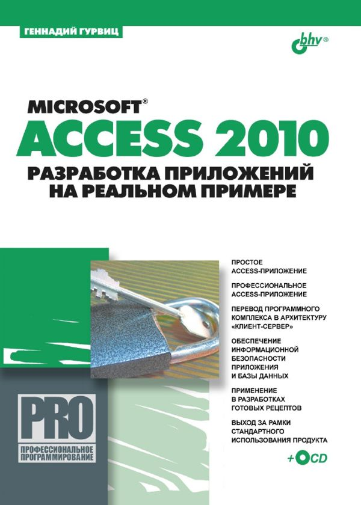

Аннотация:
Microsoft Access 2010. Разработка приложений на реальном примере" -
практическое пособие по созданию приложений баз данных в файл-серверной и
клиент-серверной архитектурах. Описываются: этапы создания приложений,
работа с Microsoft Access 2010 (клиент) и Microsoft SQL Server 2008
(сервер). Процесс создания элементарного Access-приложения показан на
примере небольшой, но реальной базы данных, также выполнена его
модификация, придавшая приложению основные черты профессиональной
разработки. Оформление интерфейса осуществлено методом пересекающихся
каскадов. Даны практические приемы перевода созданного программного
комплекса в архитектуру "клиент-сервер
Год издания: 2010
Издательство: БХВ-Петербург
Формат: PDF
Страниц: 497


Книга в формате PDF (43 498 kB) Архив содержит как файлы CD, прилагаемые к книге, так и скан-копию с книги отличного качества.